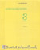
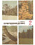
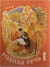
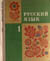
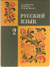
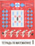
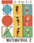
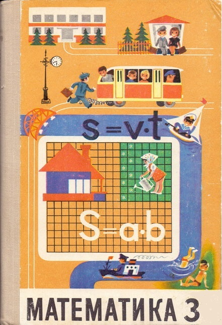
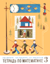
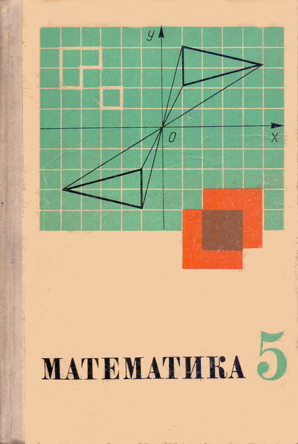

-

ПРИРОДОВЕДЕНИЕ 3 КЛАСС , читать
Л.Ф. Мельчаков, изд-во "Просвещение", 1977 год -

ПРИРОДОВЕДЕНИЕ 2 КЛАСС , читать
З.А. Клепинина, изд-во "Просвещение", 1975 год -

РОДНАЯ РЕЧЬ 1 КЛАСС , читать
М.С. Васильева, Л.А. Гобушина, Е.И. Никитина, М.И. Оморокова
Книга для чтения в первом классе, изд-во "Просвещение", 1975 год -
«ФЛАЖОК» 2 КЛАСС
,
читать
М.С. Васильева, Л.А. Гобушина, М.И. Оморокова, М.К. Щербак, В.М. Федосеенко, К.Т. Голенкина, Н.Н. Светловская
Книга для чтения во втором классе, изд-во «Просвещение», 1972 год -
РУССКАЯ РЕЧЬ В КАРТИНКАХ, часть первая
,
читать
И.В. Баранников, Л.А. Варковицкая
18-е издание, изд-во "Просвещение", 1990 год -
РУССКАЯ РЕЧЬ В КАРТИНКАХ, часть вторая
,
читать
И.В. Баранников, Л.А. Варковицкая
18-е издание, изд-во "Просвещение", 1990 год -

РУССКИЙ ЯЗЫК 1 КЛАСС , читать
М.Л. Закожурникова, Ф.Д. Костенко, Н.С. Рождественский
Изд-во "Просвещение", 1974 год -

РУССКИЙ ЯЗЫК 2 КЛАСС , читать
М.Л. Закожурникова, Ф.Д. Костенко, Н.С. Рождественский
Изд-во "Просвещение", 1979 год -
МАТЕМАТИКА 1 КЛАСС
,
читать
М.И. Моро, М.А. Бантова, Г.В. Бельтюкова
Изд-во "Просвещение", 1977 год -

ТЕТРАДЬ ПО МАТЕМАТИКЕ ДЛЯ ПЕРВОГО КЛАССА , читать
Н.Ф.Вапняр, А.М.Пышкало, Н.А.Янковская,
изд-во «Просвещение», 1976г. -

МАТЕМАТИКА 2 КЛАСС , читать
М.И. Моро, М.А. Бантова, изд-во "Просвещение", 1973 год -
 ТЕТРАДЬ ПО МАТЕМАТИКЕ ДЛЯ ВТОРОГО КЛАССА
,
читать
ТЕТРАДЬ ПО МАТЕМАТИКЕ ДЛЯ ВТОРОГО КЛАССА
,
читать
Н.Ф.Вапняр, А.М.Пышкало, Н.А.Янковская
изд-во «Просвещение», 1976г. -

МАТЕМАТИКА 3 КЛАСС , читать
А.С. Пчёлко, М.А. Бантова, М.И. Моро, А.М. Пышкало
Изд-во "Просвещение", 1977 год -

ТЕТРАДЬ ПО МАТЕМАТИКЕ ДЛЯ ТРЕТЬЕГО КЛАССА , читать
Н.Ф.Вапняр, А.М.Пышкало, Н.А.Янковская
изд-во «Просвещение», 1979г. -

МАТЕМАТИКА 5 КЛАСС , читать
Под редакцией А.И. Маркушевича
Изд-во "Просвещение", 1978 год